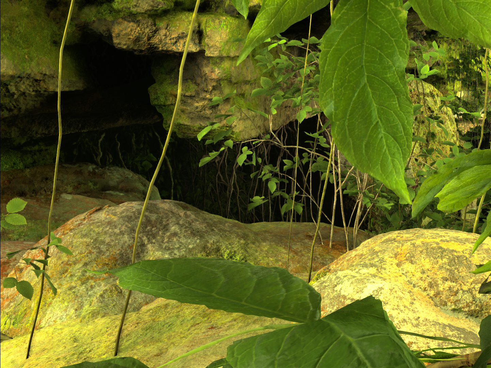
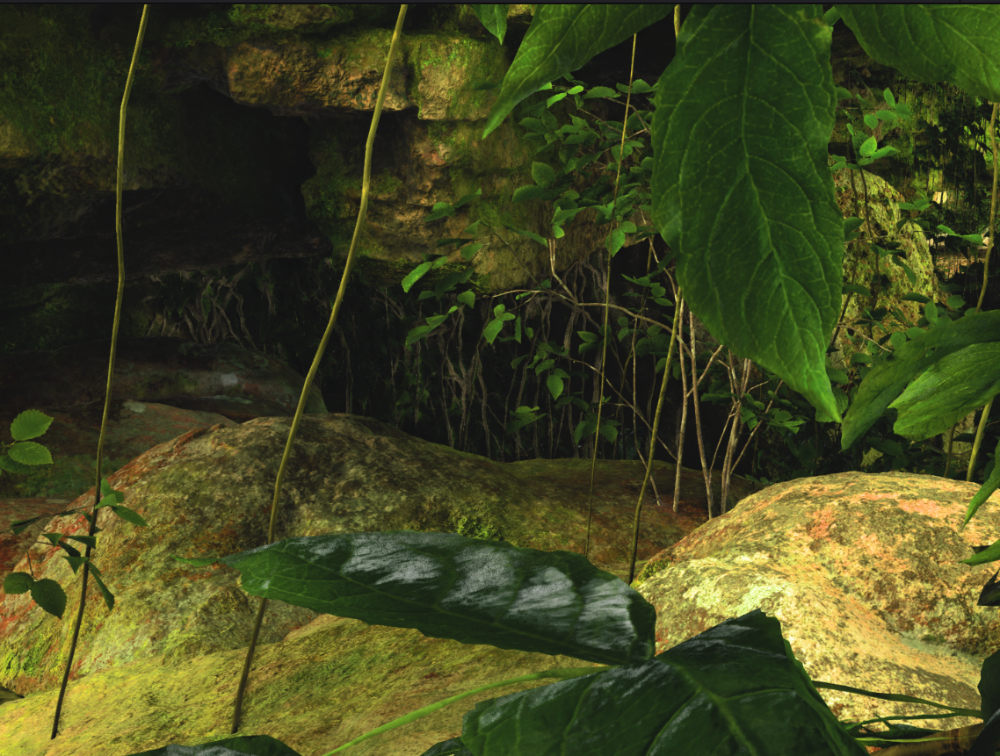
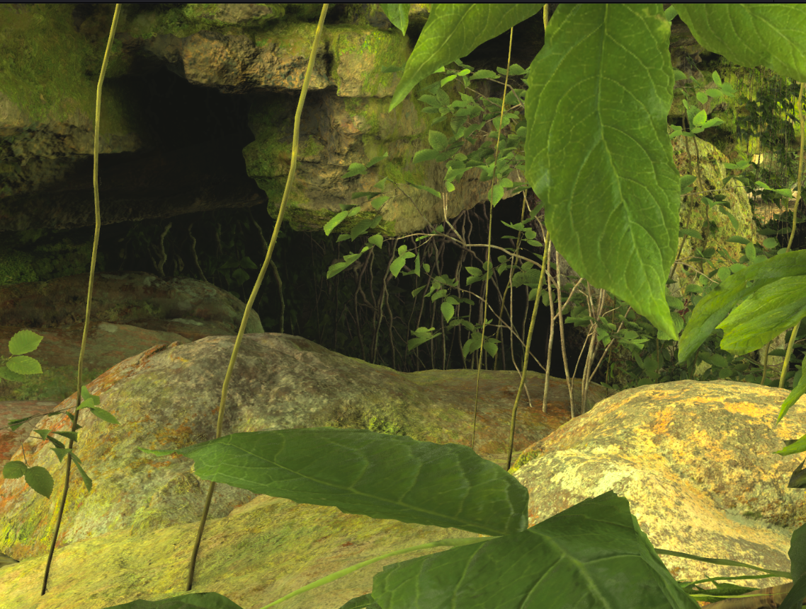
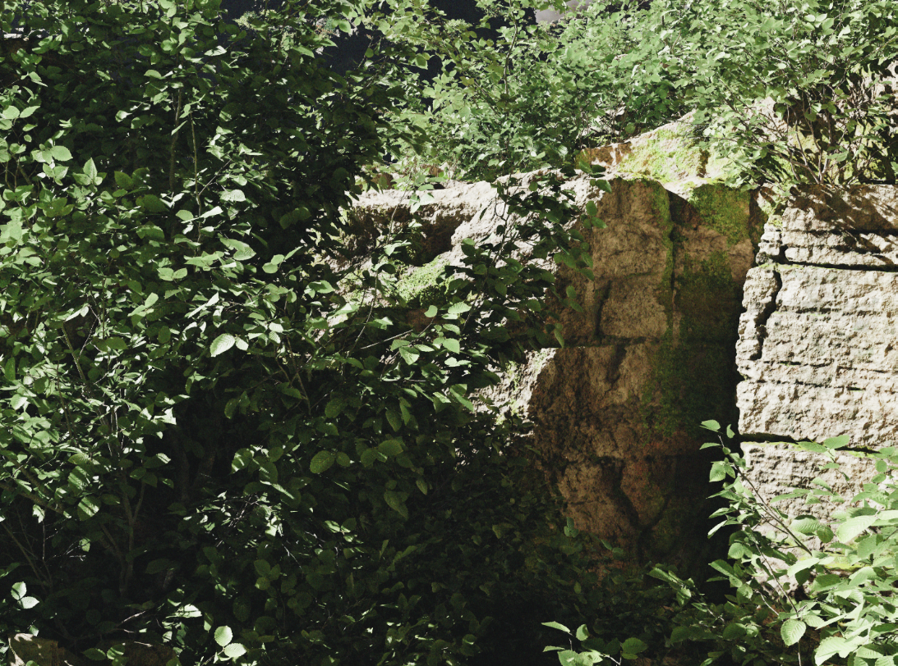
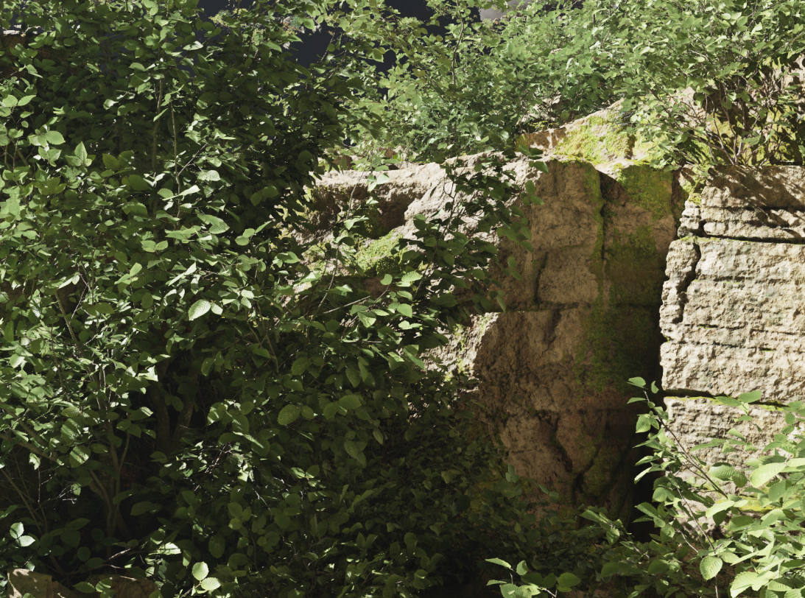
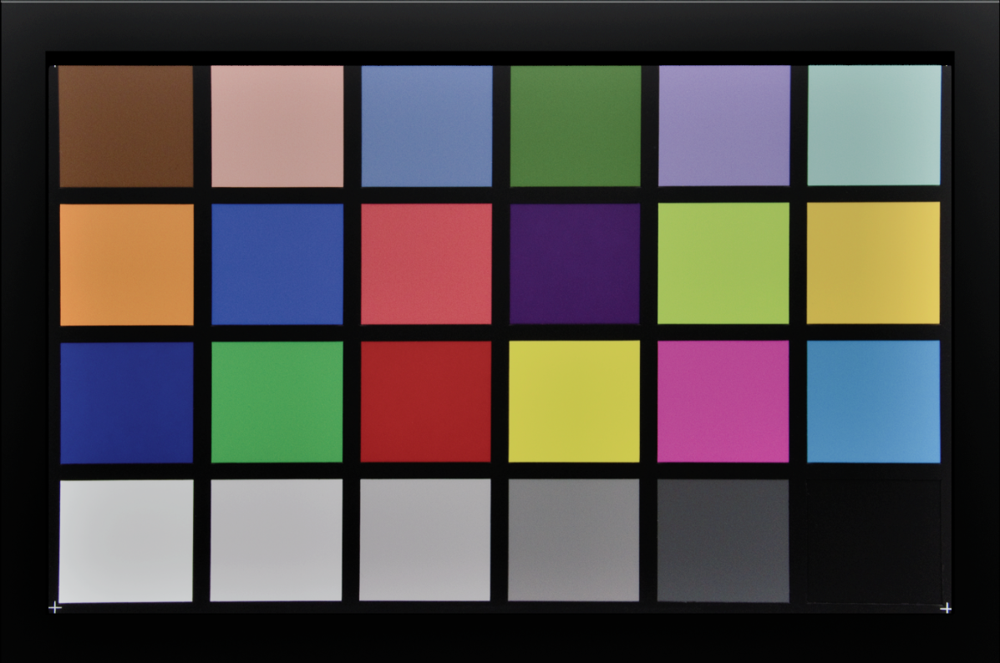
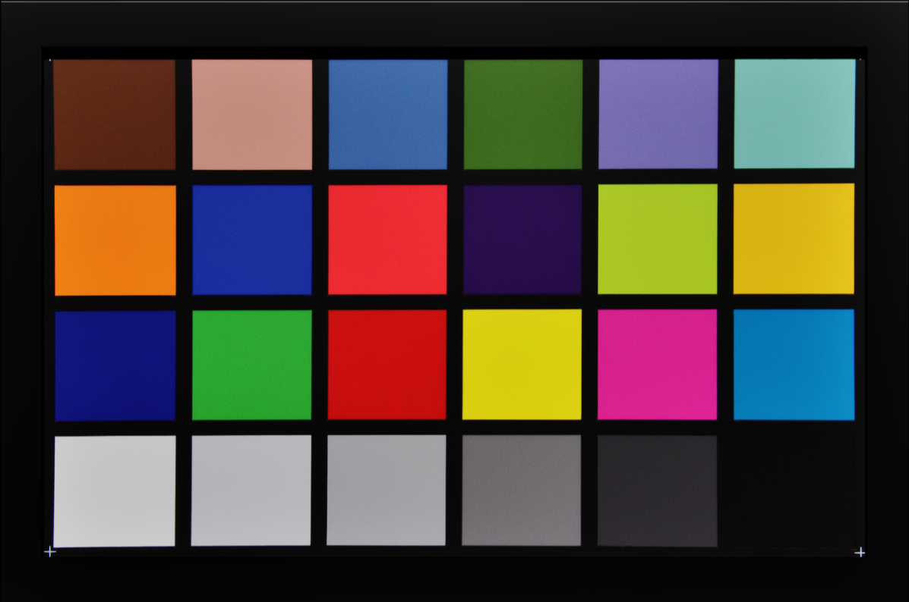

Description
This project simulates the ALEV4 sensor found in ARRI digital cinema cameras inside Unreal Engine. The simulation reproduces the sensor's Dual Gain Architecture (DGA): rather than a single readout, it derives two gain paths — a high-gain and a low-gain read of the same exposure — and merges them with a luminance mask. The low-gain path preserves highlight detail by clipping later, while the high-gain path provides cleaner shadows; the mask determines which path's output each pixel inherits, extending the captured dynamic range. The merged image is then transformed into the ARRI Wide Gamut 4 (AWG4) colour space and encoded with the ARRI LogC4 transfer function, so footage integrates directly into standard ARRI LogC4 grading workflows alongside real ARRI material. The simulation is a drop-in plugin that runs in real time as part of the post-processing chain.
Results
Images captured from the “Electric Dreams Environment” world from the Fab marketplace. Both renders use an identical camera position, focal length and exposure.







Benefits
The core benefit is pipeline compatibility: footage rendered through the plugin behaves like ARRI camera footage in post-production. CG shots can be graded alongside real ALEXA material using the same LogC4 transforms and LUTs, colour-matched without hand-tuning, and pushed around in the grade with log latitude — overexposed highlights that a default render would clip remain recoverable. For virtual production and VFX work that mixes Unreal renders with ARRI capture, the plugin removes the colourist's matching step.
Challenges & Issues Encountered
One issue that surfaced during testing is that the plugin has a defined operating envelope: it expects manual exposure and a scene exposed with the subject near middle grey, just as a physical camera does. Pre-built sample worlds often ship with auto-exposure volumes, exposure overrides, and heavy volumetric atmospherics that modify the light before it reaches the sensor simulation, producing washed-out or mismatched results. The remedy is to disable those overrides and expose the scene deliberately — the same discipline a cinematographer applies on set.